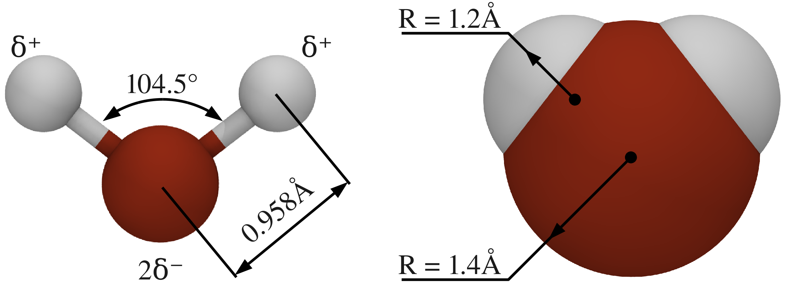
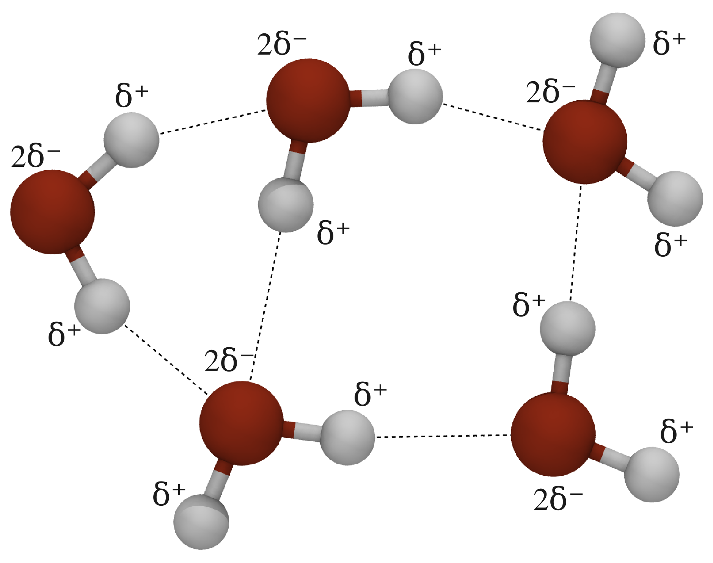
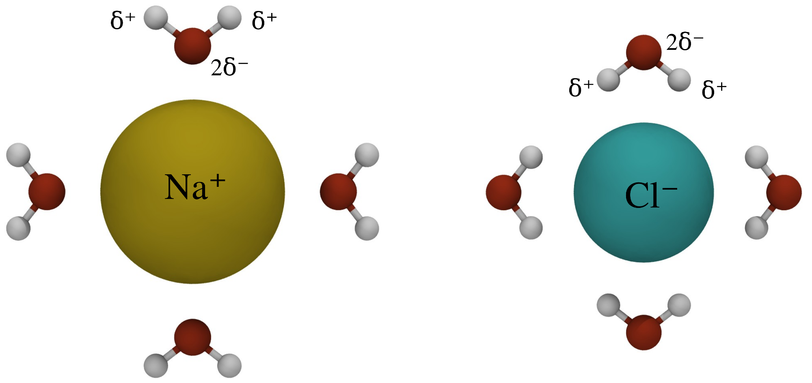

Water is a medium of life.
Our body is about 70 percent water and all the biological processes are happening in the water environment.
Due to the high temperature (~300K), water molecules are in constant motion.
Water molecules are polar, which makes them good solvent for charged molecules.

Fig. 1 Schematic representation of a water molecule.
Left panel shows the geometry of covalent bonds, right panel is an occupied volume representation.

Fig. 2 Hydrogen bonds (dashed lines) between water molecules.
Partial positive and negative charges on neighboring water molecules interact, forming hydrogen bonds.
At T=300K, water molecules are at constant motion so the hydrogen bonds rupture and form again.
Polar nature of a water molecule makes water a very good solvent.
This is what happens if a very small NaCl crystal is placed into a water:
If we look more closely at sodium ions:
Water around chloride ions:

Fig. 3 Sodium and chloride ions in water.
The water molecules arrange around the solute ions to substitute hydrogen bonds with stronger electrostatic attraction.
Partly negatively charged oxygens are turned towards the positively charged sodium ions, positive hydrogens — towards chlorides.
Some entities (e.g. oil) are not so good in dissolving in water.
Here is what happens if we place uncharged atoms into the water:
{kind=link}